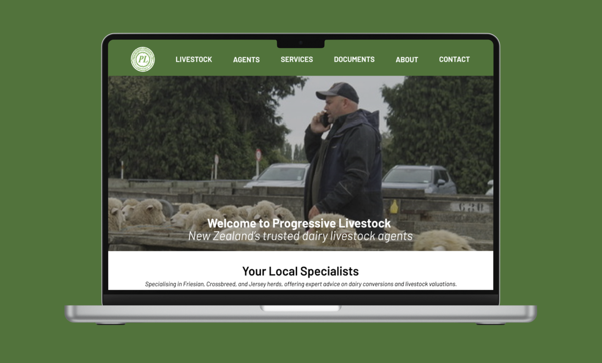
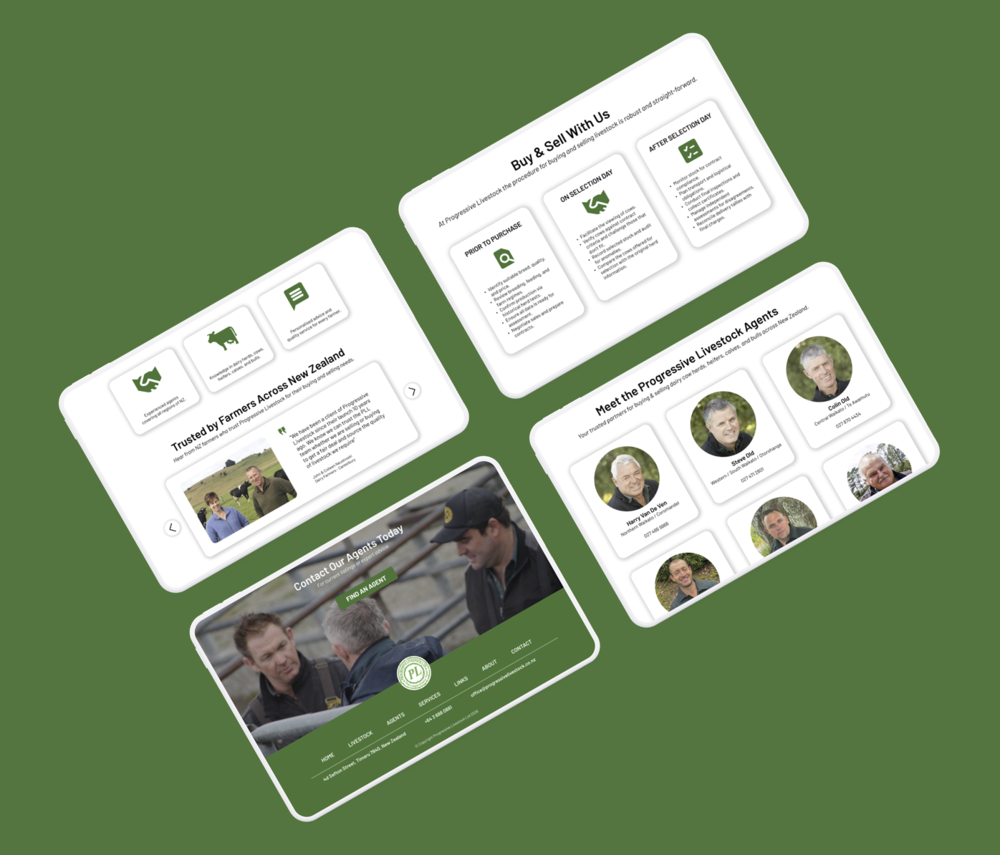
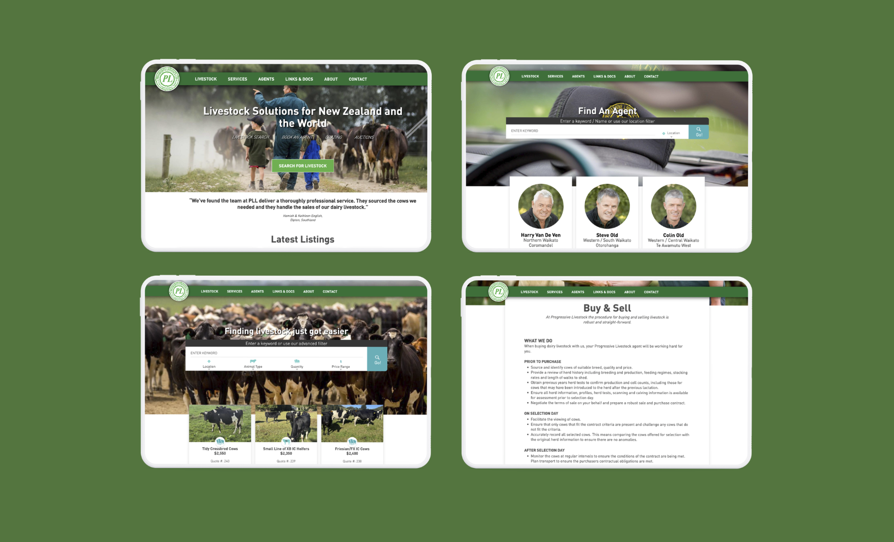
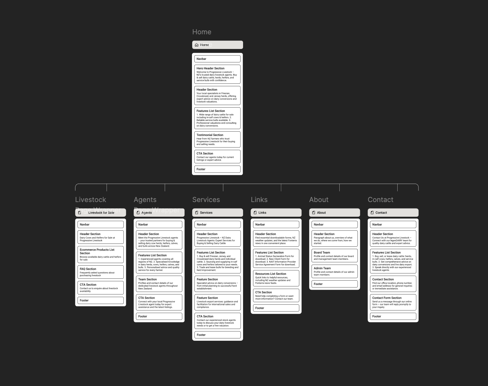
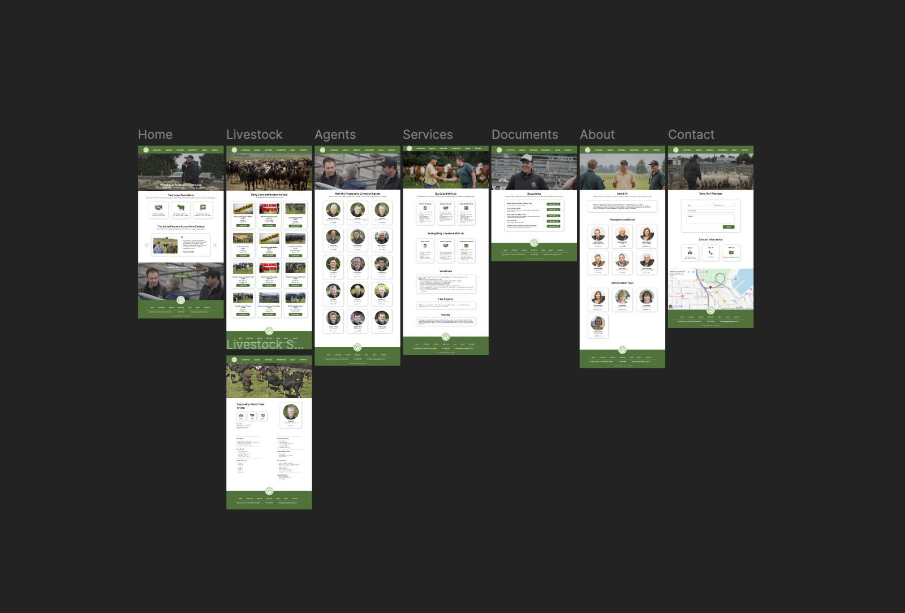

A website redesign for a livestock company.
Freelance Project
Improve the website as the first point of contact for potential clients, encouraging them to engage with agents and explore our services.
The existing website lacks a clear call-to-action, with livestock listings dominating the pages and taking priority over showcasing services and encouraging users to contact agents.
A new website design that is modern and prioritises clear call-to-actions, improved hierarchy, and a more effective page layout, making it easier for users to understand services, connect with agents, and explore listings.

I began by looking through the current website and marketing report done by the company. Seeing what was working and what needed improvement.

People weren't engaging with the existing call-to-action because it didn’t look like a clickable button.
I created an updated site map to improve overall navigation, prioritise key content, and support clearer information hierarchy. This also guided the development of revised copy.

The new site map reduces the number of pages and improves overall navigation.
I created a high-fidelity prototype using the existing branding, alongside the updated site map, ready to be handed off to the development team.

“The information is much easier to digest, and the buttons clearly look like something I can click.”